초파리 뇌 · 칠해서 걷게 하기
뉴런 하나는 단순하고, 판단은 연결에서 나온다
전날 캐시 필수
덱에 들어간 활동과 덱에 못 넣은 공식 교안(boundaryX AI 포니봇 17차시) 활동을 판단을 누가 하느냐로 묶었습니다. 카드의 '덱' 링크는 해당 장으로 바로 열립니다. 블록 그림을 누르면 크게 보입니다. 모두 41개.
포니봇·마이크로비트 없이 노트북만으로 됩니다. 도입이나 쉬는 시간, 로봇 0대 교실에 씁니다.
뉴런 하나는 단순하고, 판단은 연결에서 나온다
전날 캐시 필수
광선 5개 센서 + 신경망, 규칙 차와 학습 차를 눈으로 비교
radufromfinland.com/projects/selfdrivingcar
학습된 정책이 균형을 잡는다
ttktjmt.github.io/mjswan
임계값이 곧 판단, 잡음이 들어오면 헛반응과 놓침
ak7660.github.io/fly-brain-escape
1등 답도 100%가 아니다 → 신뢰도
말하는 AI에서 보고 움직이는 AI로(VLA)
데이터·클래스·신뢰도를 로봇 없이 전부 겪는다
qksrhrrltnf-ctrl.github.io/microbit-ai-control/handpose.html
센서도 판단도 없이 정해진 순서대로 움직입니다. 순차 구조를 익힙니다.
다운로드·장치 연결·실패 대처(전원 OFF → USB 재연결)
OLED 좌표(0~127 × 0~63)와 문장·도형 출력
P8에 연결된 RGB LED 4개, 변수와 255번 반복으로 페이드
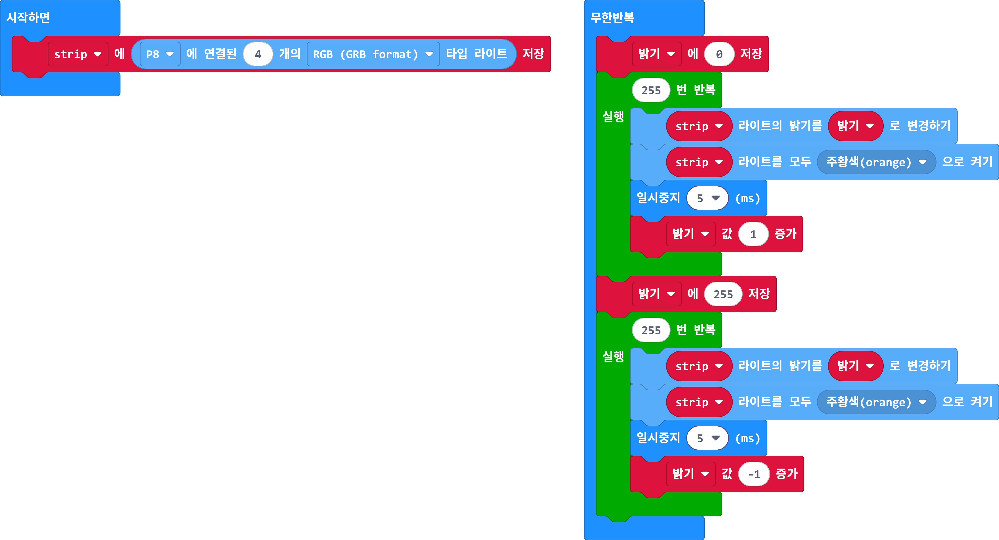
덱에 없음. 블루투스 코드와 함께 못 씀(LED 확장 제거)
속도 0~255와 출발 속도(데드밴드)
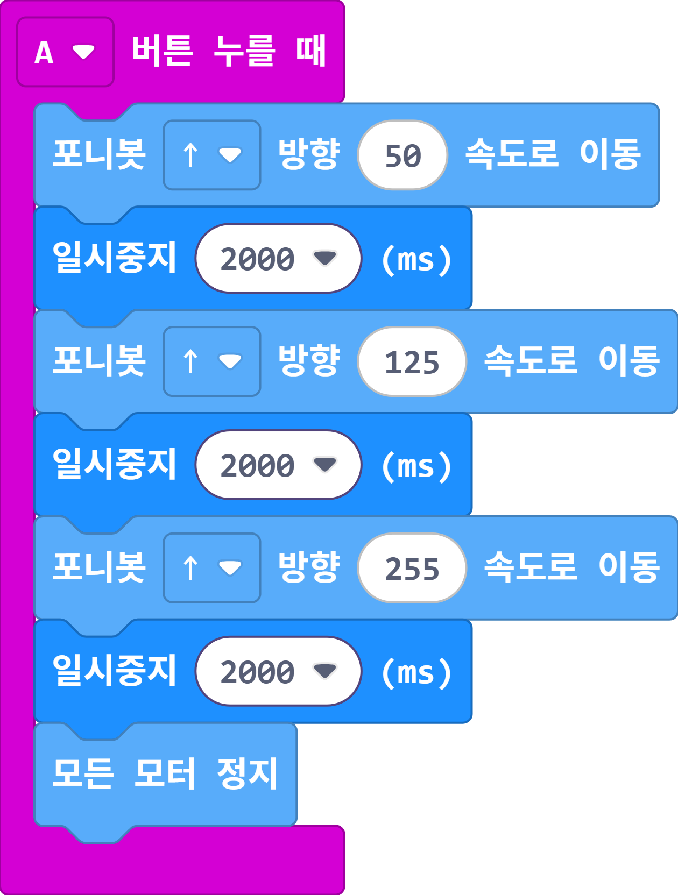
M1~M4 위치와 정회전·역회전
교안 도면 M3 중복 → 하나는 M4
45° 롤러와 네 바퀴 힘의 합
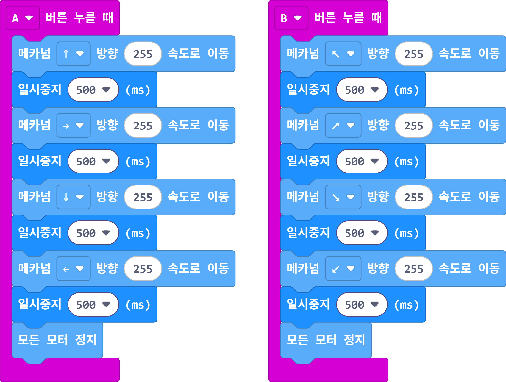
로봇은 받은 명령만 수행합니다. 오후의 '학습 모델'과 대비할 기준점입니다.
숫자로 약속한 명령, 그룹 번호, 송신 OFF해도 마지막 명령 유지
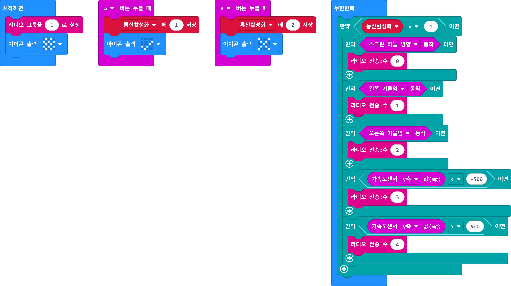
평평하게(0=정지) → B 순서 안전 안내
문자 명령 U/D/L/R/B, 페어링 설정
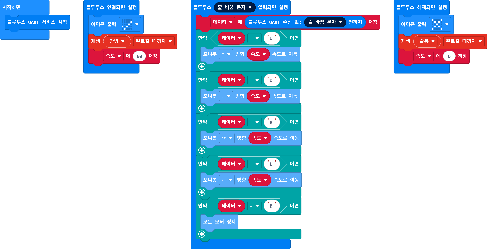
공식 코드는 끊겨도 모터가 멈추지 않음
가속도 센서로 흔든 횟수 → 주행 시간·속도
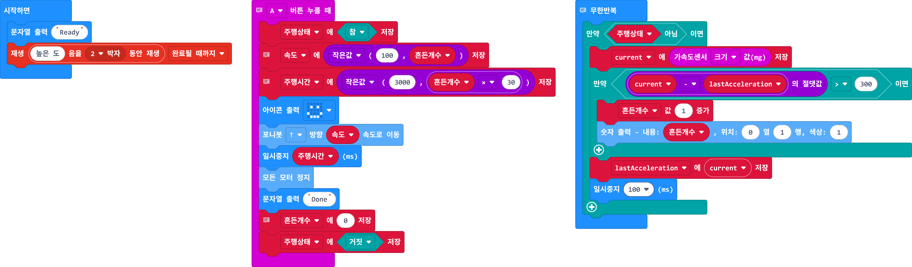
덱에 없음. 아이스브레이커로 좋음
마이크 소리 크기 기준값, 랜덤 거리
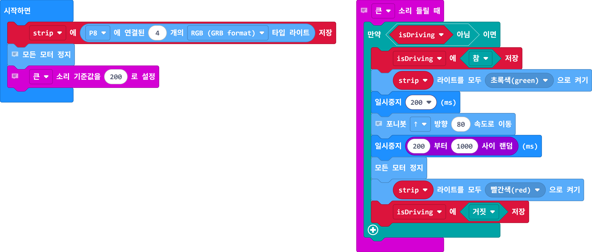
덱에 없음. 여러 대가 동시에 반응하니 순서 운영
오전의 핵심입니다. 기준값을 정한 사람이 판단을 만든다는 것을 겪습니다.
기준값은 재서 정한다(측정 → 판단 → 대입)
if-else와 기준값, 히스테리시스
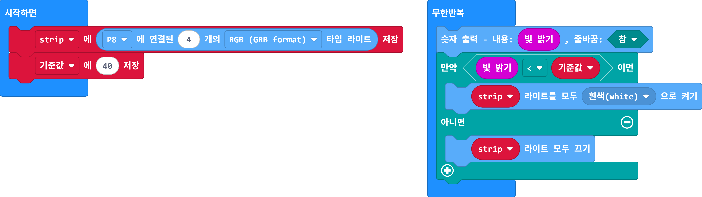
교안 <40, 공식 hex >200 → <40으로 통일
센서값은 숫자, 시간으로도 쓴다
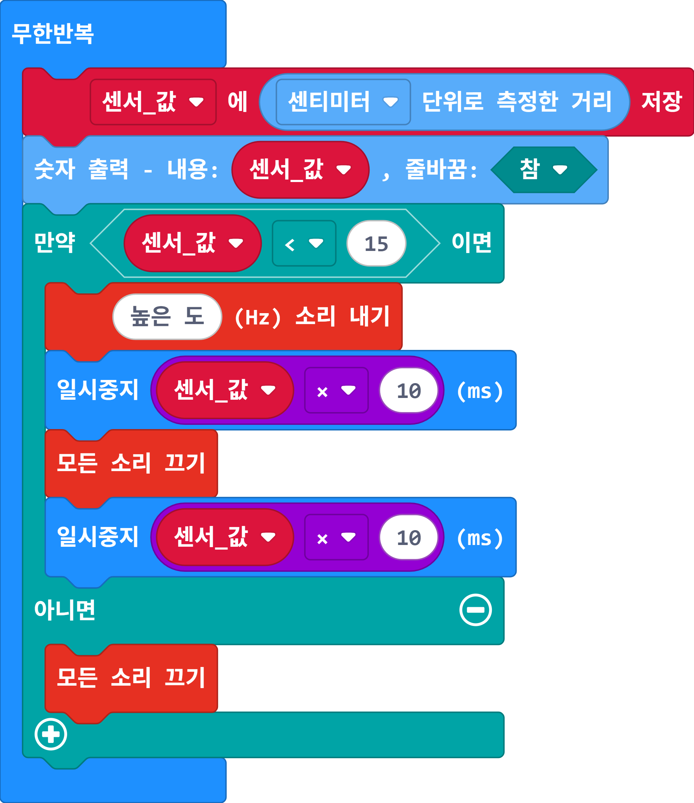
시간으로 90° 맞추기, 개루프의 한계
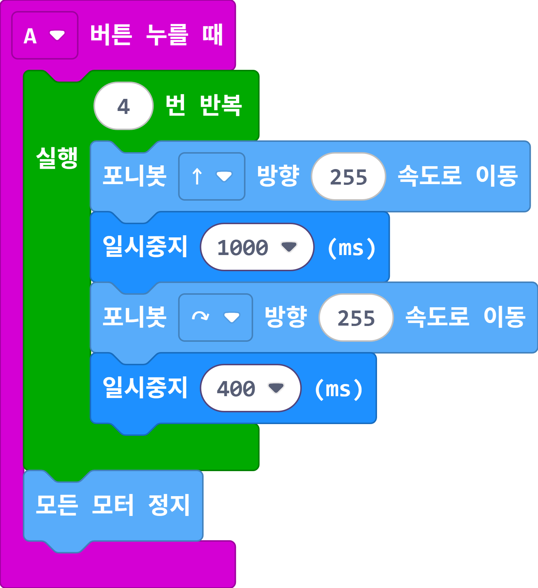
거리 → 속도 비례 변환과 제한
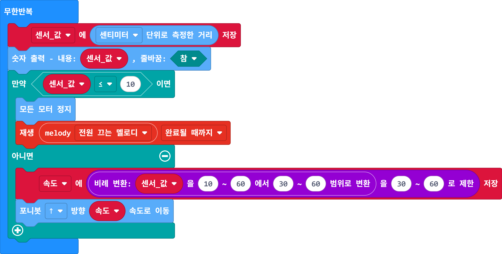
매트 없을 때 경로 A. 출력 범위 30~80
오차 × 2, 포화, 목표 거리
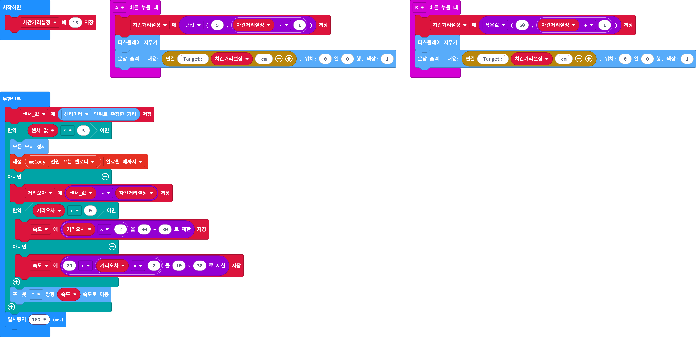
센서 둘 경우 넷 = 진리표 = 코드
매트 있을 때 경로 B
라인 + 컬러 센서 통합
공식 코드는 교차부에서 빠져나오지 못할 수 있음
속도와 안정성의 맞바꿈
오후의 핵심입니다. microbit-ai-control(강사 제작)로 모델을 만들고 블루투스로 포니봇에 지시합니다.
클래스 go·stop·left·right, 30개 이상, 데이터 규칙
qksrhrrltnf-ctrl.github.io/microbit-ai-control/handpose.html
모델은 데이터에 있는 것만 안다
No Pairing Required, bluetooth 확장, 장치 이름 5글자
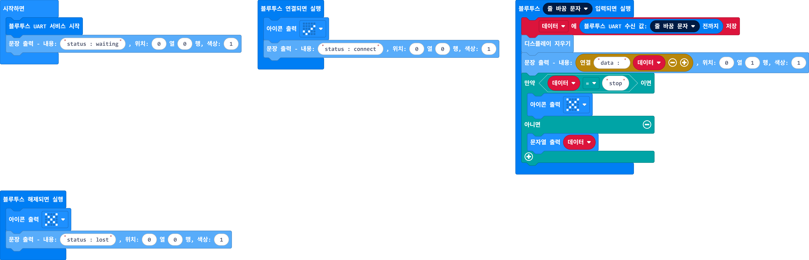
인식 → 문자열 → 블루투스 → 모터, 끊기면 정지
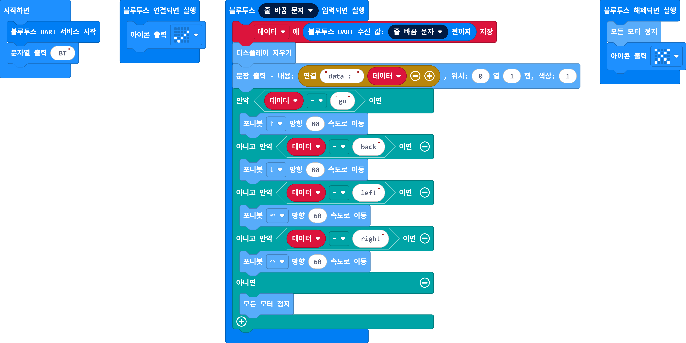
AI·통신·로봇 중 어디가 틀렸나
신뢰도·연속 확인·샘플·클래스, JSON v1·v2
지시는 AI, 안전은 센서
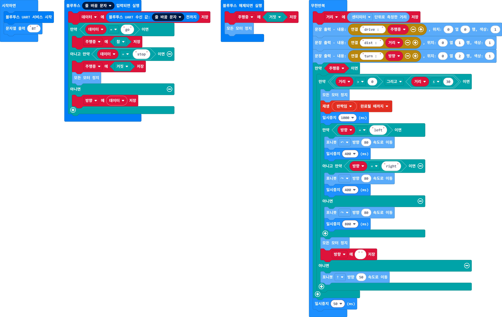
AI 출발 + 라인 + 15cm 정지
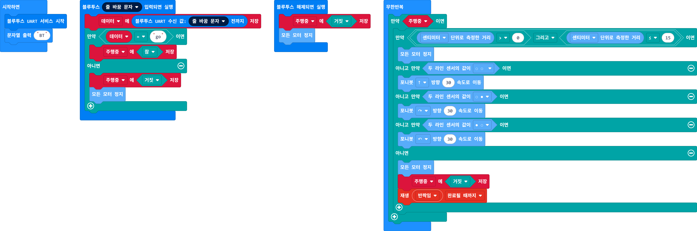
Teachable Machine 이미지 모델, 조명·거리
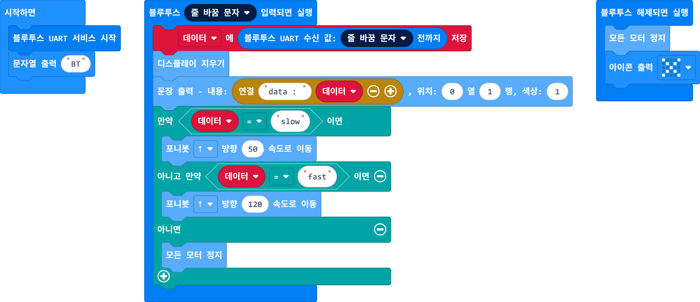
qksrhrrltnf-ctrl.github.io/microbit-ai-control/image.html · 공식 fast 255 → 120
사전학습 음성인식 + 명령어 표 + 함수 경로
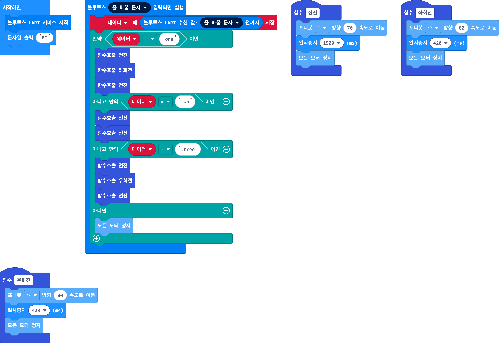
qksrhrrltnf-ctrl.github.io/microbit-ai-control/voice.html · 인터넷 필요
사전학습 COCO-SSD 80종, 좌표·크기로 제어
로봇 → 웹 방향 데이터, 초음파 0과 튀는 값 보기
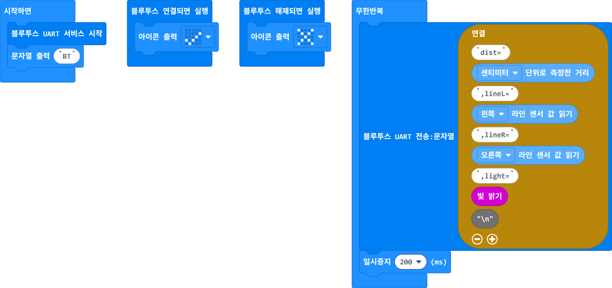
qksrhrrltnf-ctrl.github.io/microbit-ai-control/streamer.html
PoseNet 위의 분류기(전이학습), 중립 자세 = 정지 클래스
덱에 없음. https://qksrhrrltnf-ctrl.github.io/microbit-ai-control/pose.html · 공식 교안은 차렷 = 후진
AI 조종에 규칙 기반 안전장치를 더한다
덱에 없음. 출력물 img/official/printout_2_p1.png
얼굴 패킷(입·눈·미소) 자르기
덱에 없음. https://qksrhrrltnf-ctrl.github.io/microbit-ai-control/face.html
원교안 쪽 번호는 boundaryX AI 포니봇 교안 PDF(크롭 전 원본) 기준. 블록 그림: 공식 정답 hex(L로 시작)와 연수용 새 코드(P로 시작)를 MakeCode에서 렌더. AI 도구: microbit-ai-control(서광민 제작).